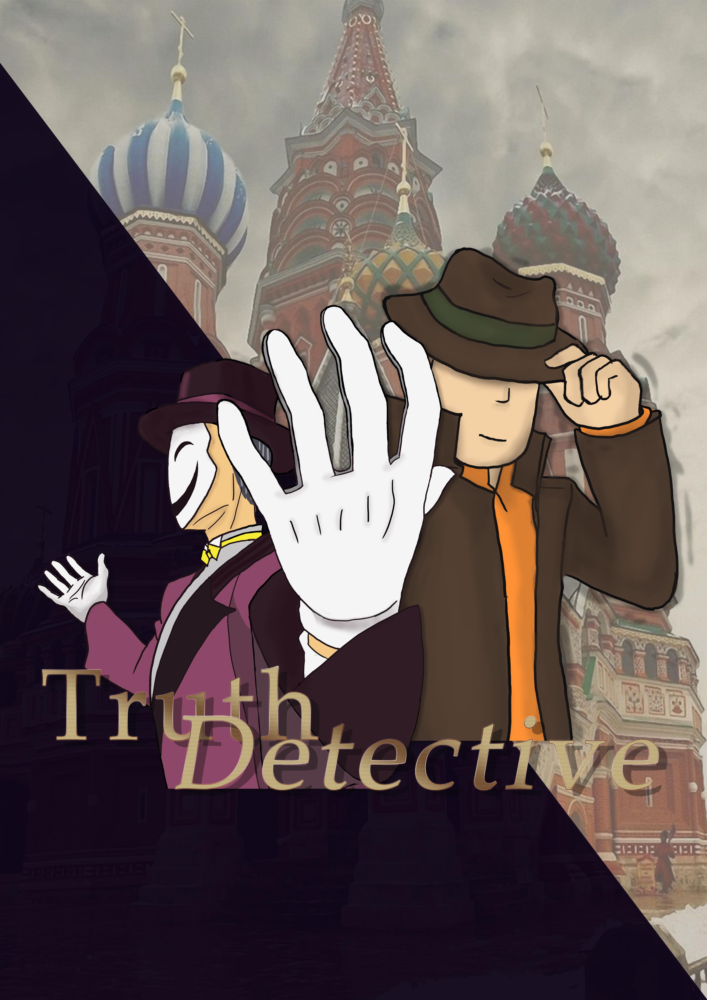

Design Exploration
The design exploration is a precursor to the Major Project. In this first stage, we have been asked to use the Trove data to create a web-based application which needs to generate interesting ways of focusing, filtering, searching, connecting or presenting the data. Besides, I have to produce a poster that illustrates explains my design concept.
Here is my idea below:
When I first time open Trove website, I have attracted by a beautiful map so I decided to use these categories to build my concept.
Therefore, my whole concept plans to use maps, images and digital newspapers categories from Trove. This is a web game named ‘link up’, when the user jumps into the webpage, he/ she will need to set a date and choose an Australian state first. And then, an old map, will pop up, which represent the period and area user chose. What’s more, all news happened in that date will show up as red points. When users use mouse hovering on any points, the news title will show. The thing user need to do is to link points which title’s end letter is same with the next title’s first letter. For example, I see two titles, one is ‘GIANT TOE’ and the other is ‘EDDIE SMITH BRITHDAY’, then I can link them together because ‘TOE’ end letter is ‘e’ and ‘EDDIE’ start letter is ‘e’ as well. However, the only rule in this game is that the line user linked cannot cross over each other.
In addition, for the target audience, there are 2 modes in the game. One is versus mode. Users can develop their memory, and improve their quick search ability through searching in limit time. Another is classic mode which is no time limitation. Although players may not get interest in Australian history, through linking the point randomly, they will find some topic they like and they can click the title to see the news detail (a little bit like news aggregator).
There are 2 screenshots from my poster.


Process:
Before I chose ‘LINK UP’, we have been called upon to think about 5 ideas and share our ideas in class. Depend on what's I have explained, most people in our group like the last idea named ‘DETECTIVE GAME’. However, I like the ‘LINK UP’ most, perhaps the last is easier to make it but for the poster I insist to work on ‘LINK UP’.
Reflection:
I have to commit that the presentation for design exploration I did not do well. After listened to my classmates presentations, I realized the importance of idea feasibility. My idea is too idealize to implement and this leads to nobody voting my idea during that section.
Besides, I have a little stage fright when talk to various people. During the presentation, I did not explain my idea clearly and smoothly. Therefore, I think of this the second reason why no one chose my idea.
Improvement:
From this unsuccessful design exploration, I have learned how to think and choose ideas.
- First of all, always think about the target audience and idea feasibility;
- Subsequently, listen to others advice rather than holding self-opinion;
- Finally, prepare presentation at home and keep practicing my script.
- Therefore, next time, I believe I will improve a lot.
Major Project: Truth Detective
Part A
During this section, we have formed into teams, I voted for a classmate who creates a ‘Detective Game’. Because I have a similar idea just like this one, I vote for her. Her idea named ‘Truth Detective’. It is a web based adventure game which contains different types of historical data for users to explore. In this game, players will act as a professional detective who is in charge of a theft case in the 20th century. The objective is that players need to complete three levels, discover the password of a hidden safe in order to find a featured piece of evidence in the mysterious house. Each level contains one question related to one specific aspect on the historical knowledge. Before entering the first level, users are given a question and they must search for clues inside the room. Once they collect all missing puzzles and answer the question correctly, the current level is completed and the room door opens for continuing to the next room.
Process:
In this group, I mainly responsible for UI&UX design. So during this stage, I have decided the basic tone and the style of the game interface like Picture 1.
Draw a series of sketches for the game process (Picture2)
Make the Power Point for virtual add in the presentation (Picture 3)
Build the first version of the game logo (Picture 4)
Besides, I have assisted to finalize the game concept. Such as, adding a timer for counting down time. Confirm the target audience is 13-15year old students and reduce the item's bar in the game.
Reflection:
From my observation in the presentation, I found the sketches in the Power Point which it really effective for increasing virtual add. I can see our audience’s smiles and doubt, when they stared at the PPT.
On the other hand, the unsuccessful part is the logo. I should not draw sketches first and then draw the logo because when you drew some sketches, you would find it’s hard to decide to create a logo based on these sketch’s style. The sketch has too many features on it, which is notoriously difficult to abstract them in a logo. However, if I create a simple logo first, then it’s easy to make everything behind it. In other words, it’s easy to make things complicated, but it’s hard to simplify them.
Improvement:
Therefore, for rest of works, I will start from the easy thing and then work on the complex one.
In addition, I just feel this logo still does not look good, so I intend to make a new logo and create characters seriously.
Part B
So far, we have finished the major part of our product. We have finalized the story and narratives of the game, created game characters and chapter scenes, designed character dialogues and game clues.
Process:
As for what I have done during part A, it can be basically divided into 2 types. One is the personal work, another is the group work.
Personal Work:
I have to admit this is a really struggled period. Particularly for creating the game logo. As you can see from the logo 1, it is the second logo I made for this game and I have mentioned the first logo in Design Exploration. I gave up the first one because I think it is suitable for our game style and it lacks of creativity. However, when I made the second one and showed it to my team members, they all dislike it, and said it looked too blood for our audience.
Therefore, I created the third one see logo 2. Actually this is not a single one but a series of logo I made. Because I think this kind of logos can present the final goal of the game (find the diamond to win the game) but I cannot decide which one is the best.
However, I showed them to my group they did not quite satisfied with these logos. They mentioned these logos look a little wired, if use them combined with our game.
And then, I realized these kind of logos more suitable for business brand rather than a game. Due to this reason, I created the logo number 4(logo 3). But this is just a demo of logo, I planned to add color and texture in next stage. Unexpectedly, all group members like this logo and they evaluated this one is novel and pretty suited for our audience. Thus, we decided to use this one for our game.
After the logo design, I started to draw each chapter senses. However, after I finished the 1 scene for the game like picture 5, I found I did not have enough time to draw each chapter senses by myself. Thus, I go to have select suitable online pictures for our game scene.

There is the rest of scenes I used. Picture 6
Inside each scene, I need to create some clickable items for containing game clues, such as a stack of books, a vase, a bundle of letters, a paper plane, etc. here is the items demonstration below (Picture 7).

Besides, I also drew game characters. Based on the requirement of characters, the smart and logical detective, and the irritable and arrogant thief. Picture 8 is the 2 characters I created.
For each character, we designed an image to represent the specific emotion of him. Picture 9 creating the variety of character images can increase the engagement and invite our audiences to enjoy the story.
Group Work:
Back to the group work, I have help for designing the game clues. From my perspective, clues design is the hardest part of the design stage, which is the key factor to impact the difficulty and interestingness of the game. For designing clues, we don’t only need to consider the clue itself, but we also have to check whether it can be found from Trove website and how we should get it from Trove. So far, we have designed a draft version of clues, which are all selected elaborately for our game story and all clues material are retrieved by Trove API. The major form of clues are images with captions, which include the actual pictures, screenshots of books, digital newspapers and so on.
I also participated in designing character dialogue. This is chapter 1 dialogue below which I have written.
Player: Look! There is a locked door over there. That’s the only way to get out this room.
Thief: Hold it idiot! You shall not pass!
Player: Who’s speaking? Identify yourself!
Thief: How dare you sneak in my house and try to steel my treasure? Trespasser shall be punished.
Player: Wait… what!
Thief: But if you can unlock all the question locks, I can erase your penalty and admit my guilt to the court.
Thief: Otherwise… you will be locked in here forever, ever.
Thief: Ha ha ha ha ha ha ha ha ha!
Player: Calm down... calm down… get my brain moving!
Player: OK, the first thing I need to do is to investigate valuable clues from this room.
Player: And solve that question with my knowledge!
Reflection:
Until now, I think everything just runs perfectly. Although we have a couple of technique problems, I believe we can work them out step by step. Especially, my personal work got great feedbacks, most testers like the UI and characters. Some of them even did not recognize they are drawings rather than online images. So I think listen to others opinion is really useful, despite the fact that I may suffer a tough design period like the logo design period but the result is fantastic. Thus, it is worth to do so.
Besides, according to the testers feedbacks, I think the clue might be too difficult to our audience-13-15 years old students, because some of the tester- our classmates felt the game is hard.
What’s more, we think this is a game for gaining historical knowledge so we put long articles in each item. However, testers all said the game has too much reading.
Improvement:
For the rest of part, I will continue to refine my ‘drawings’, and add some details for the game interface. I will highlight the clickable items and dodge the unclickable items’ color because during the testing section, a lot testers click some unclickable items and feel these items look different with others. Besides, I will simplify the game clues and add some graphic clues in order to keep appealing audiences’ attention.
Part C
According to what we have done and what we plan to do, this stage we have to complete all of our product. During this stage I are still refine my game interface and add more detail for it, work on the rest of game clues and adjust the whole game based on user experience.
Process:
Still, what I have done can be separated into 2 parts, personal work and group work.
Personal work:
Based on testers’ reflection, I found a lot of testers cannot find the game question box, so I made a new one, which is more obvious to see. Picture 10
In order to unify the interface style, I create additional dialogue box too. Picture 11 Besides, through the observation in testing, I feel testers want to skip the dialogue or review it depends on different personalities, so I add skip, previous and next button for them to use.
I also refine the logo as I mentioned before, add color and texture for it. See picture 12. I have selected a new typeface for the game, which looks more suitable for the game style, and set it for the entire game to make the game looks tidier and nicer.

Group Work:
I have edited and refined the game clues for some chapters with my group members. For example, chapter 1 purpose is to find who the second owner of the diamond is. We determined that the art gallery serves as this chapter scene so all clues in these works of arts. The first clue in my mind is a portrait of this diamond owner. And then, because the man is a great man, I choose a big event picture which event triggered by him, and I edit a brief introduction for that event. The next clue is about his hobby, so this text covered by a picture which is relevant about his hobby. The last clue is the picture of diamond and a short story about it.
Reflection:
A minor issue I need to improve which is the size of the picture I made. Firstly, I did not think about the difference of PC resolution, so in some widescreen computer the game interface has been expanded, which looks so wired and hilarious. Secondly, I forget to compress images, so all images in our game load on a web a little bit slow than we expected. Thirdly, I did not crop pictures through the picture’s margin after drew, so when I set them in HTML, which is hard to control their sizes based on so much space in pictures. Finally, I did not name each picture properly, which lead to my group members very confused what it is in our HTML code.
Improvement:
Definitely, I will improve my picture issues. Next time I will create a 4:3 version and a 16:9 version of pictures for different resolution. I will compress all pictures for fast loading in the web. I will crop all pictures through their margin for using them conveniently. Of course, I have to name my pictures properly based on what they are.
Portfolio
The final product of this web based portfolio includes in an in depth documentation of three main projects that I have created over the last 3 months. These three projects are design exploration, design computing as well as this portfolio itself. In each page, for these three projects, its final product, the process in obtaining the final product, my personal contribution to each project, project reflection and improvements that can be made are discussed.
Process:
This portfolio was a bit challenging to start because I was free to design and layout the website as I wanted. As a result of this, the design mainly reflects myself as a designer. This can be depicted through the color scheme that has been used which are black, white and grey as there are some of my most preferred colors. Furthermore, the design and layout of the portfolio is unclustered and minimalistic which again I feel reflects myself as a designer.
I decided to make design and layout for the pages of the three main projects the same as the content required in each page are the same and I also feel this would create a flow towards the portfolio. The layout can be mainly separated into 2 parts. The left is a brief introduction about myself. The right side comprising by all of my stories about the main project.
The main languages used to create the portfolio are HTML, CSS and JavaScript. I have also used artefacts such as images and sketches in order to aid visitors in understanding each project and make the portfolio more appealing.
Reflection:
I am delighted with the outcome of the portfolio. I feel that the design and layout is a reflection of myself as a designer. I also feel that the navigation links at the right of each screen as well as colored links in the content are clear enough for the user to know exactly what they will see by clicking on those links. As one of the main aims of the portfolio was to ensure the users can easily understand the layout and navigate through each page, I feel that I have achieved it by successfully designing and implementing the portfolio.
Improvement:
Although I achieved what I wanted to in this portfolio, I felt that there are still some improvements that can be made. Firstly, although I was looking for tidy and simple design, more work could have been done on some part of the design such as the main title which reads "Xi Chen's Portfolio". Although the black color still coincides with the color scheme, more work, if time permitted, could have been done to design a better and more appealing font.
Course Reflection
Meeting Expectations:
After looked back to my post in week one, I feel very happy with the outcome I got and I almost meet all my original expectation.
Firstly, I have learned HTML and CSS from an absolute beginner. Before I learned this course, I did not have any code experience but now I already can design and complete a personal portfolio be myself.
Secondly, I have worked with my group member very well. Instead of my original expectation, all my group members are very nice person. They are glad to help each other and nobody drag down the product progress.
Finally, I remember at the beginning of this course, I wondered this course needs a highly self-learning skill, so I need to learn a lot by myself but why I pay for this course?
Right now, I have an answer! If I do not pay for this course or say attend this course, I will never try to learn this knowledge. Therefore, now I am really appreciated learning this course and this course actually teaches me a lot.
Learning across the course
The most important thing I have learned is the testing section. Because testers or say unfamiliar person of your project always can give you some useful feedback. Because when you are familiar with your project, you may become blind with the drawbacks of your project. Furthermore, from the tester’s suggestion, you will not deviate from the target audience. They will always give you feedback from the audience perspective.
Changes to improve my experience of the course:
Looking back on what we have done for this semester, I would like to say that I really enjoy the whole process. Generally speaking, as an international student that we should more communicate with student from different countries and be a group. Because the people come from different countries have different culture may create different ideas and viewpoint leading the product become multicultural and more interesting. However, our group members all come from China during this project, it has both advantages and disadvantages. Limit thinking and weak grammar are our weaknesses. On the other hand, same cultural background leading us has good communication and more efficiency.
It is obvious successfully complete the entire project relies on lots of things: one is a group of hard working members and another is an effective working group. Obviously, these are very closely related to the group work. I had experience of working with a group, and I knew some skills of working with others. Nonetheless, there is something that I need to improve in my future teamwork. In the group, it is important to show your enthusiasm and be active in the group. And never feel shy to ask questions and ask for help. Secondly, be patient to listen to other’s opinions. Everyone has his or her own point of view based on discrete thinking, and there is never right or wrong. We should discuss them and found out the right one for group work. Thirdly, communication plays an essential role during group work. Any decisions are based on good communication. And I believe the best way to communicate with people is face to face. These are all helpful group skills that I have learnt in our group over the semester.